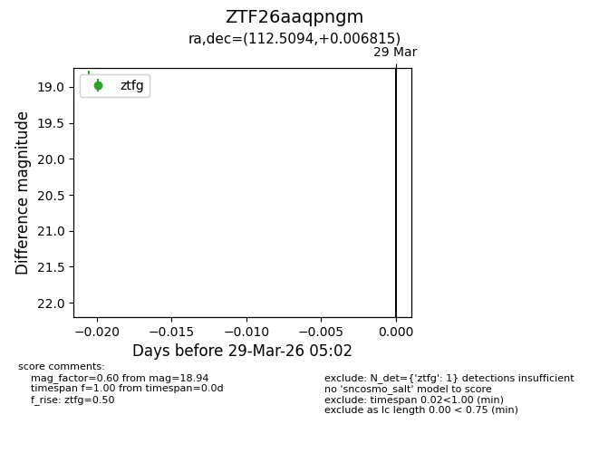
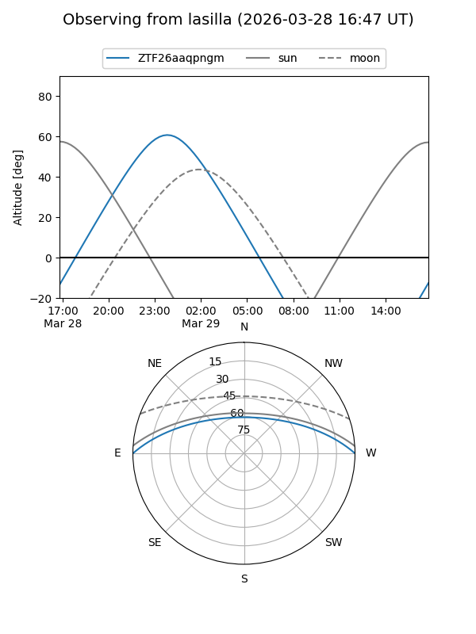
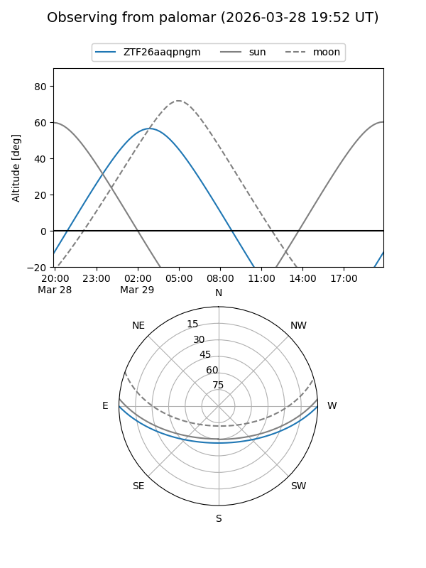

ZTF26aaqpngm
Target ZTF26aaqpngm at 2026-03-29 05:05
Aliases and brokers:
FINK: link
Lasair: link
ALeRCE: link
alt names
ZTF26aaqpngm (ztf,fink_ztf)
Coordinates:
equatorial (ra, dec) = 112.5094,+0.00682
equatorial (HMS+DMS) = 07:30:02.25,+00:00:24.54
galactic (l, b) = (217.3592,+8.58291)
Flags:
Photometry:
last ztfg=18.94
1 ztfg detections
Lightcurve

Visibility


Additional plots